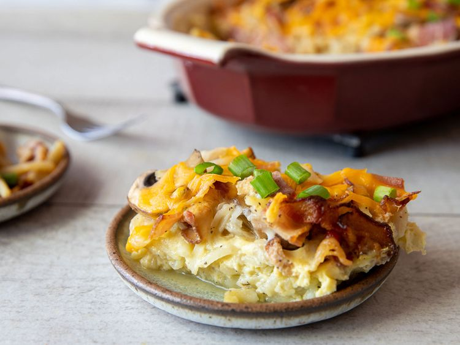
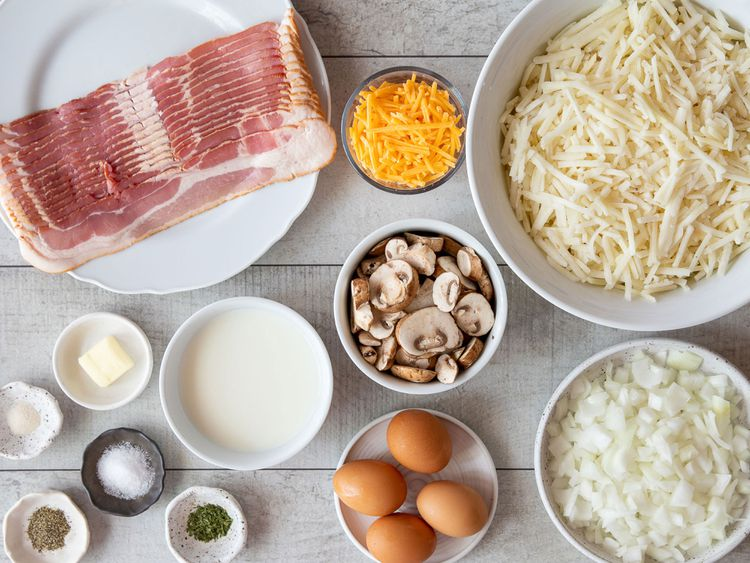
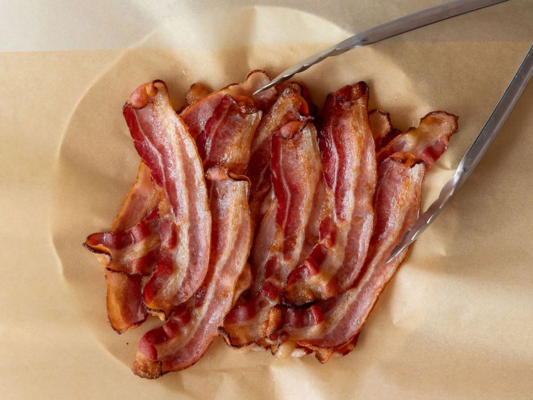
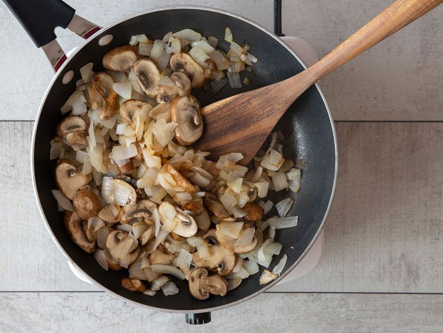
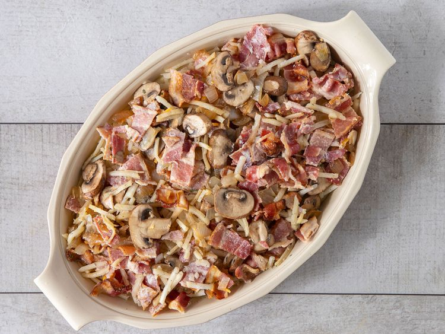
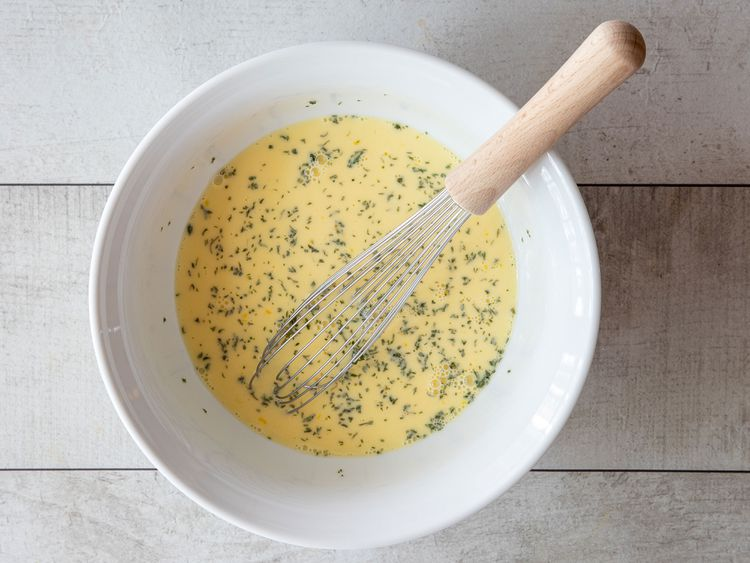
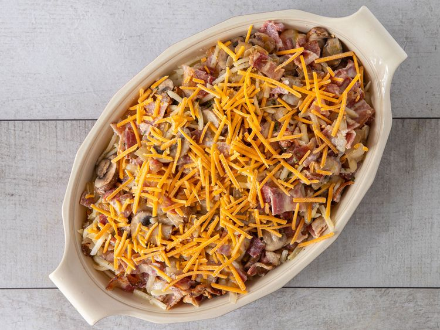
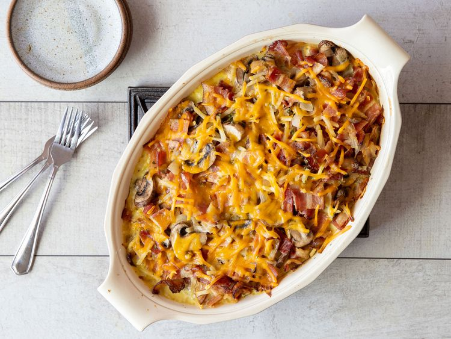

Casserole

Descriptions
This Christmas breakfast casserole with hash browns, mushrooms, bacon, and eggs is easy to prepare on Christmas Eve. Just pop it in the oven for an hour on Christmas morning, and enjoy it for breakfast or brunch.
Ingredients
- 1 pound bacon
- 2 medium onions, chopped
- 2 cups fresh sliced mushrooms
- 1 tablespoon butter
- 4 cups frozen hash brown potatoes, thawed
- 1 teaspoon salt
- ½ teaspoon ground black pepper
- ¼ teaspoon garlic salt
- 4 medium eggs
- 1 ½ cups milk
- 1 pinch dried parsley
- 1 cup shredded Cheddar cheese
Steps
-
Step 1
Gather all ingredients. -
Step 2
Cook bacon in a large skillet over medium-high heat, turning occasionally, until
evenly browned, about 10 minutes. Transfer bacon to a paper towel-lined plate and crumble when cool enough to handle. Drain grease from the skillet. -
Step 3
Cook onions and mushrooms in the residual grease in the skillet until onions are translucent and mushrooms are tender, about 5 minutes. -
Step 4
Grease a 9x13-inch casserole dish with 1 tablespoon of butter. Place potatoes into the bottom of the dish; sprinkle with salt, pepper, and garlic salt. Top with crumbled bacon, then add onions and mushrooms. -
Step 5
Whisk milk, eggs, and parsley together in a mixing bowl; pour over casserole and top with Cheddar. Cover and refrigerate, 8 hours to overnight.  -
Step 6
When ready to bake, preheat the oven to 400 degrees F (200 degrees C). Bake in the preheated oven until set, about 1 hour. -
Step 7
Serve hot and enjoy!